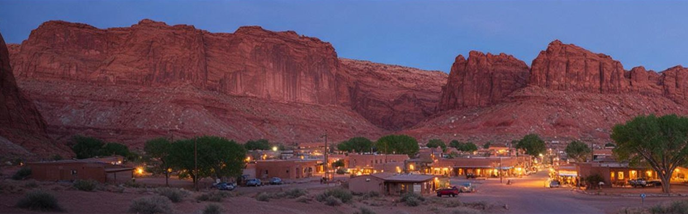
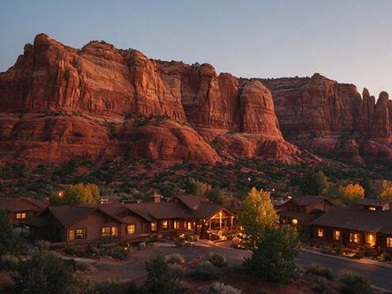
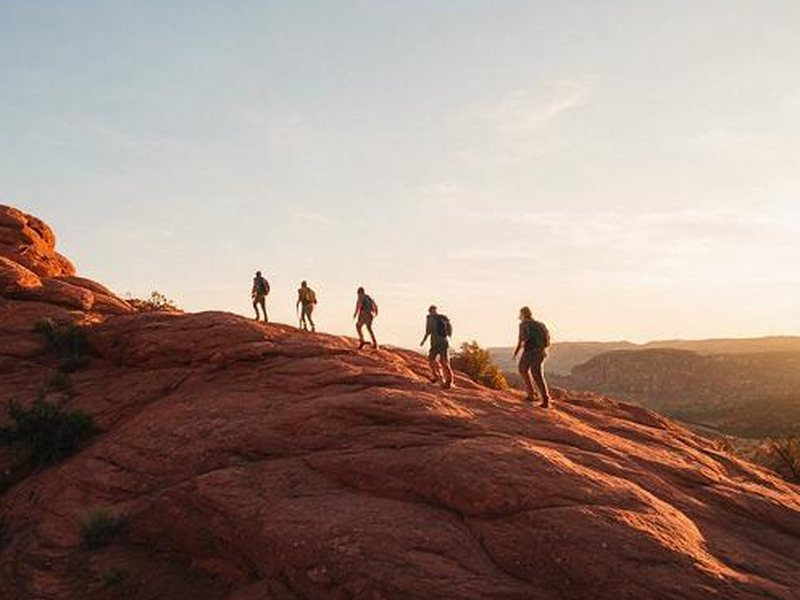

Plan your stay: lodging, getting there, and local tours
Where to sleep, how to arrive, and who can help once you are in Springdale.

Where to stay
- Springdale: the gateway town at the south entrance, with the most hotels and restaurants and a town shuttle to the park.
- Inside the park: Zion Lodge is the only in-park lodging, and Watchman and South campgrounds take reservations. Book well ahead for spring and fall.
- Rockville, Virgin, and Hurricane: short drives from the south entrance, often with lower rates.
- Kanab and Mount Carmel Junction: the east side, handy for the Zion-Mount Carmel Highway.
- St. George: about an hour away, with an airport and the widest choice of lodging.
- Cedar City: close to Kolob Canyons, and a sensible base if you are driving from the north.
Getting there and around
Las Vegas is the largest nearby airport, about a 2.5 to 3 hour drive. St. George Regional Airport has fewer flights but is only about an hour away. Salt Lake City is roughly 4.5 hours by road.
In busy months the main canyon is explored by shuttle, so plan to park in Springdale or at the visitor center and ride in. Vehicles over certain size limits need a tunnel escort on the Zion-Mount Carmel Highway, so RV drivers should confirm the requirements before arriving.

Tours, gear, and guides
- Guided day hikes: a guide handles the route, pacing, and park rules.
- Canyoneering: technical slot canyon routes led by trained guides.
- Narrows gear: canyon shoes, neoprene socks, and walking sticks, plus dry suits in cold months.
- E-bike rentals: a quick way to cover Springdale and the Pa'rus Trail.
- Photography workshops: timed for the best light in the canyon.